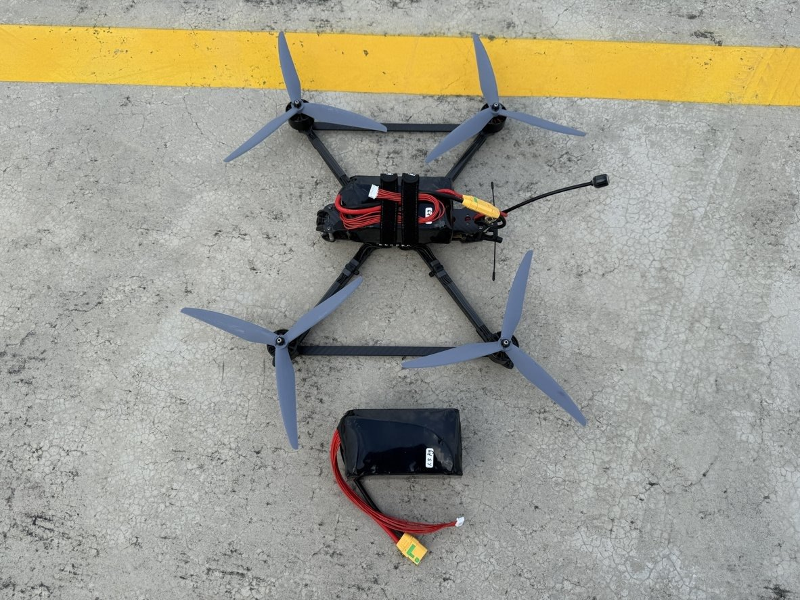
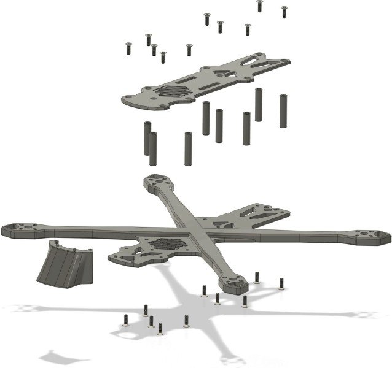
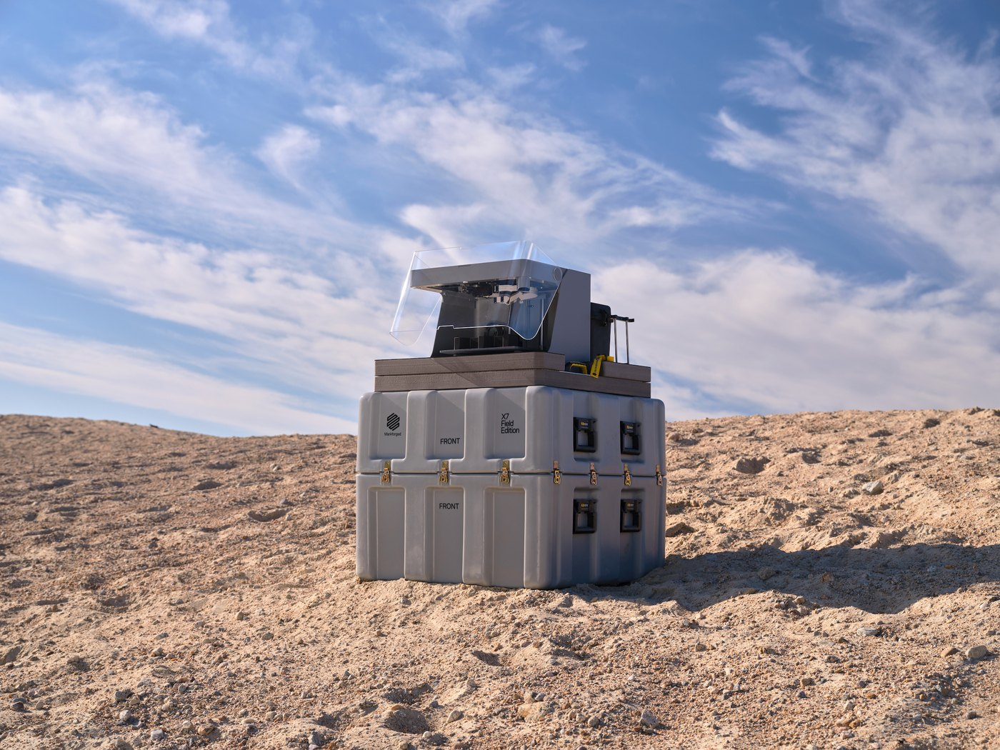

News & Insights

FPV 無人機機體
ASTER-SWARM 是一次性使用的 FPV 攻擊無人機，機體由五個標準化模組組成。原型機已完成起飛與高速飛行功能測試，並通過蒲福風級九級抗風測試（平均風速 20.8–24.4 m/s），結果經國家中山科學研究院軍民通用中心量測驗證。同一套機體加裝螺旋槳護罩，即可作為訓練機。
「一般 3D 列印的機體，飛得快就會晃、會裂。導入 Markforged 的連續碳纖維列印後，我們第一次能用 3D 列印做出真正撐得住高速飛行的機體。加上模組化設計，ASTER-SWARM 從改版、維修到量產都能在台灣自己完成，這正是自主國防最需要的能力。」
戴家維，執行長，艾斯特物聯科技股份有限公司挑戰
一般 3D 列印機體，撐不住高速飛行
FPV（第一人稱視角）無人機要在數秒內完成全油門加速、急轉與俯衝。以 PLA、ABS、PETG 等一般線材列印的機體，在高速飛行的負載下會出現四類結構問題，直接影響飛控穩定度與任務成功率：
機臂撓曲：剛性不足的機臂在急加速與急轉時彎曲，馬達軸線偏移，造成推力損失與姿態失準。
結構共振：馬達高轉速引發機體共振，振動雜訊進入陀螺儀，導致 PID 振盪與 FPV 影像抖動。
層間分層：一般 FDM 零件的層間結合最弱，長時間振動與衝擊下會沿層線開裂。
疲勞與熱潛變：馬達座附近長期受熱與反覆應力，塑料零件逐漸潛變，造成螺絲鬆脫、機臂根部斷裂。
另一條路：CNC 碳板機架：強度足夠，但仰賴進口碳纖板材與外部加工。設計每改一次就要重新開料、等待交期，跟不上原型迭代的速度，也不利建立自主供應鏈。

解法
連續纖維強化：把碳纖維鋪在受力路徑上
艾斯特選用 Markforged X7 Field Edition（X7 現場版）。X7 以 Onyx™（短切碳纖維強化尼龍）列印零件外形，並在指定層沿受力路徑嵌入連續碳纖維，讓機臂與機體得到一般 3D 列印達不到的剛性與強度。
連續碳纖維強化：機臂根部、馬達座等高應力區鋪設連續碳纖維。連續碳纖維拉伸強度 800 MPa，約為 6061-T6 鋁的 2.6 倍；密度 1.4 g/cm³，約為鋁的一半。
製程中雷射檢測：X7 Field Edition 內建雷射，在列印過程中量測零件尺寸，並用於列印校正與列印床調平，及早發現尺寸偏差。
野戰部署：整機裝於強化運輸箱，開箱至開始列印不到 3 分鐘，可在前進基地就地生產與更換零件。
機敏環境作業：提供無 Wi-Fi 硬體版本，並可選購離線版軟體；作業系統符合美國國防部 STIG 安全規範。
模組化
為量產與快速補充設計的模組化機體
ASTER-SWARM 把機體拆成五個標準化模組，每個模組都能在 X7 上獨立列印、獨立更換。損壞時只重印單一零件；改版時只更新單一模組的檔案。
M1 上蓋（TOP PLATE）：保護飛控與電子設備，可依任務配置更換。
M2 機體（BASE FRAME）：X 型主架；機臂以連續碳纖維強化，承受高速飛行負載。
M3 連接柱（STANDOFFS）：標準化連接柱，上下層快速組裝與拆卸。
M4 前罩（FRONT GUARD）：鏡頭護罩，可依攝影模組型號更換。
M5 任務模組介面（PAYLOAD INTERFACE）：標準化掛載介面，同一機體可搭配不同任務模組。

一機兩用
一機兩用：任務機與訓練機
同一套機體加裝 3D 列印螺旋槳護罩，即改為訓練機。操作手用與任務機相同的機型與飛行手感訓練；訓練中損壞的零件，可在現地重印更換。
快速迭代：改一個模組的 CAD 檔即可重新列印，不必重新開模或委外加工。
現地維修：X7 Field Edition 可隨部隊部署，損壞零件在前進基地就地重印更換。
規模化生產：標準化模組可由多台列印機並行生產，支撐大量部署所需的機隊數量。
成果
從原型到驗證：機體在台灣設計、列印、組裝
高速飛行驗證：原型機完成起飛與高速飛行功能測試。連續碳纖維強化的機臂在高負載下維持剛性，未出現一般列印機體常見的撓曲與共振。
獨立驗證：九級風抗風測試結果，由國家中山科學研究院軍民通用中心量測驗證組出具驗證文件。
在地生產：機體設計、列印與組裝全數在台灣完成，不需外購碳板機架或委外加工。
訓練與任務一致：訓練機與任務機是同一套機體，操作手用實戰機型訓練，訓練損耗的零件就地重印。
「3D 列印做無人機，問題不在印不印得出來，在印出來的機體撐不撐得住高速飛行。前提是纖維放在對的位置：連續碳纖維沿受力路徑鋪設，機臂才有承受負載的剛性。X7 Field Edition 隨部隊部署，機體損壞就在前進基地重印，不必等外部加工的交期。」
陳中欣（Brian Chen），Markforged 大中華區總經理
設備
X7 Field Edition 野戰部署規格
列印製程：熔融沉積（FFF）＋ 連續纖維強化（CFF）；建構尺寸 330 × 270 × 200 mm；雷射用於製程中檢測、列印校正、列印床調平。
部署：開箱至開始列印 < 3 分鐘；強化運輸箱，含箱 86 kg・外尺寸 914 × 914 × 762 mm；電源 100–240 VAC，150 W。
可用材料：塑料：Onyx、Onyx FR、Onyx ESD、Nylon White；連續纖維：碳纖維、碳纖維 FR、玻璃纖維、克維拉（Kevlar®）、HSHT 玻璃纖維。
環境測試：已納入美軍依 MIL-STD-810 執行之環境測試。作業系統符合美國國防部 STIG 安全規範，並提供無 Wi-Fi 硬體版本與可選購的離線版軟體。
資料來源
- Markforged X7 Field Edition 產品頁（繁中）
https://markforged.com/tw/3d-printers/x7-field-edition - Markforged X7 Field Edition 產品規格 F-PR-3013 REV 1.0a（2021/11/11）：雷射、連續碳纖維 800 MPa、建構尺寸、運輸箱、電源、可用材料、無 Wi-Fi 版本
- Markforged X7 Field Edition 產品手冊 REV 1.5（2022/02/16）：開箱至列印不到 3 分鐘、MIL-STD-810 環境測試、STIG
- 蒲福風級九級：平均風速 20.8–24.4 m/s，依交通部中央氣象署風級表
- 艾斯特物聯科技官方網站；ASTER-SWARM 的測試結果、模組設計與原型機照片由艾斯特物聯科技提供；機體爆炸示意圖為 Markforged 圖片
https://www.aster-iot.com.tw/
本文由 Markforged 大中華區暨越南團隊整理。
回到媒體中心 · www.markforged.tw